Open world games have become one of the best selling types of game especially in recent years. Many studios are releasing new versions of their traditional game series as open world titles - for example The Witcher 1 and 2 were
linear games, but The Witcher 3 was open world and became critically acclaimed as a result. Players have evolved to love the sense of freedom that is offered - the “go anywhere when you want and do what you want” mentality.
Open world games offer a simulated reality to the player which the player often lacks in their real world lives. They often achieve this by painting the illusion of a living, breathing world.
Open World: Describing a computer game where the player can move through a virtual world (Collins Dictionary)
Open World: A term for a game that allows you to explore the entire world and have barely any limits. (Urban Dictionary)
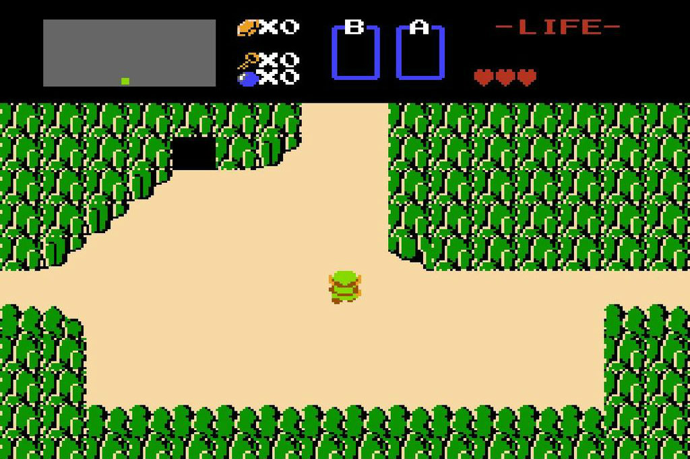
The Legend of Zelda (1986)
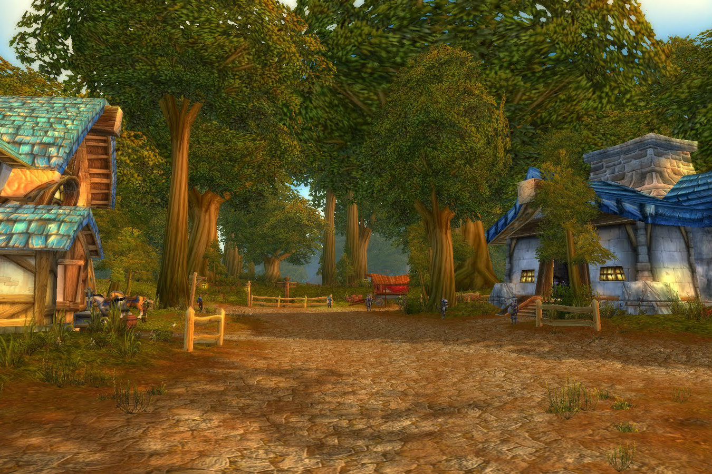
World of Warcraft (2004)
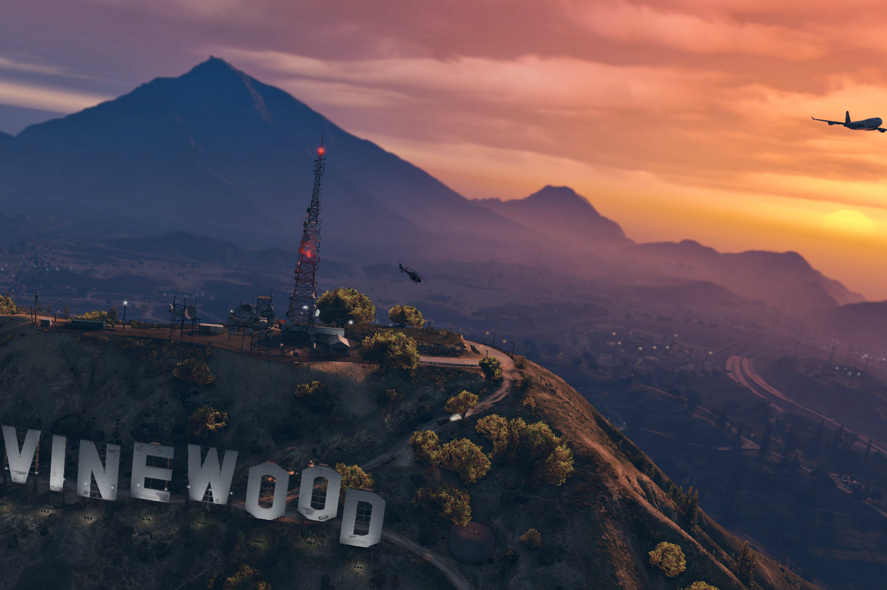
Grand Theft Auto V (2013)
A Brief History
There is much debate surrounding what is regarded as the first true open world game. However from my research the game that kept popping up was Ultima I: The First Age of Darkness. Released in 1981, Ultima I used an “overworld”
design which the player traversed in a third person view. The overworld allowed the player to travel between towns and dungeons. While traversing the overworld, the player would encounter different enemies. Once the player
entered a dungeon, the viewpoint changed from third person to first person.
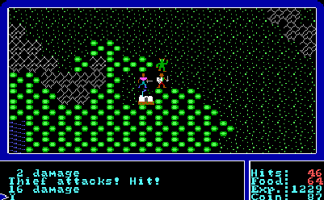
Ultima I’s Overworld
Elite, released in 1984 for the BBC Micro, is probably the most groundbreaking video game ever made. Not only was the game fully open world, it was also 3D and allowed the player to literally explore an entire galaxy as a spaceship
pilot. The player could become a trader, bounty hunter, pirate and other professions, and upgrade their ship as they progressed. It is also the first “sandbox” game. Sandbox games are detailed later in this report. Elite was
decades ahead of its time, and it would be a long time before any other video game - open world or linear - came close to matching it technically.
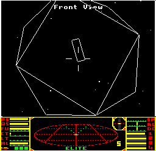
A space station as seen from the outside in Elite
The Legend of Zelda (1986) presented the player with an overworld, and it was upto the player to decide where they wanted to go. They could complete different dungeons in any order, however they could not finish the game until
they had completed every dungeon.
The first screen the player is presented with in The Legend of Zelda. The player is given a choice to explore the paths to the west, the north, or the east. Alternatively, they can enter the cave on the top left of the screen.
Metroid, also released in 1986, was the first 2D sidescrolling game that didn’t require the player to run to the right of the screen. It is also regarded as the first open world action game.
Jumping ahead 10 years to 1996, we see the release of the first truly 3D open world game since Elite. The Elder Scrolls II: Daggerfall. This was a massive RPG, complete with its own political system which the player could influence
through completing quests for guilds, orders, and religions. Bethesda studios claims that the game’s map is the size of Great Britain, around 229,848 square kilometers. There are over 750,000 non-playable characters (NPCs)
for the player to interact with. This is by far the largest Elder Scrolls game, with the following game Morrowind (2002) being only 24 km2 albeit with a far greater level of graphical detail and included voice acting.
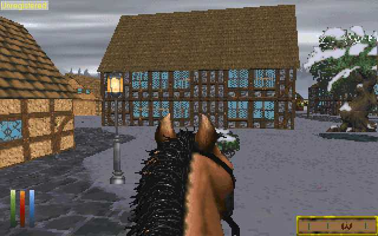
Entering town on horseback in The Elder Scrolls II: Daggerfall.
Shenmue (1999) was the first 3D open world game with a day and night cycle, weather, and fully voiced NPCs. The player played as a teenager in late 1980’s Japan tasked with avenging his father’s murder. The player could choose
whether they wanted to spend their time in-game played Sega games at a local arcade, practicing fight moves, chatting up girls, or getting a forklift driving job. They had to make sure they always got home on time so their
housekeeper/guardian wouldn’t get worried. The game truly embraced the unglamorous side of everyday life.
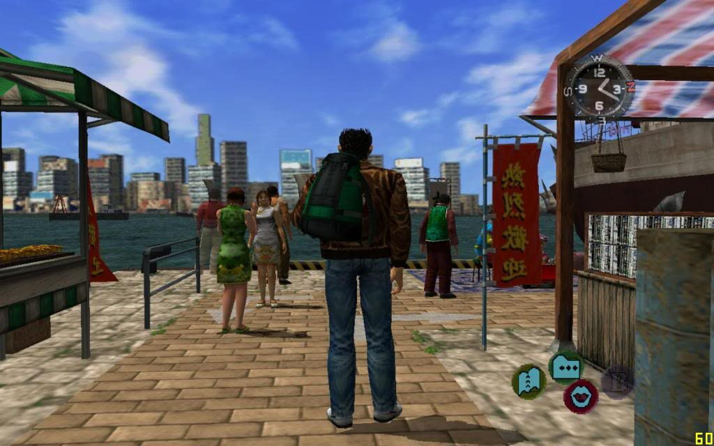
Exploring town in Shenmue
Grand Theft Auto III (2001) is regarded as providing the roadmap for every modern open world game even today. It took concepts from all previous open world games and put them together. It set the standard for all open world games.
Its formula has been built upon in its sequels, and each subsequent GTA game has set a new standard.
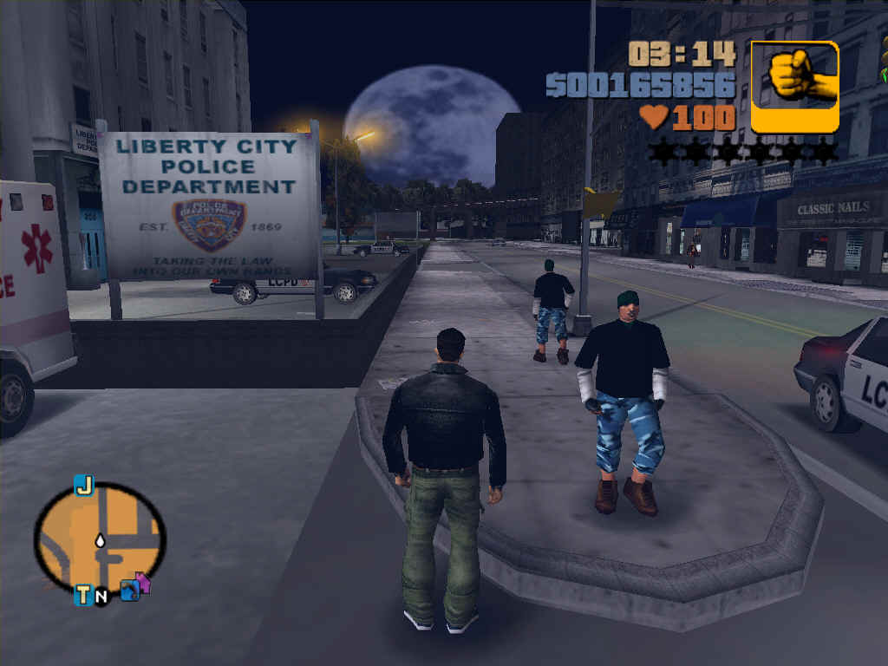
Grand Theft Auto 3 was a groundbreaking game.
World of Warcraft (2004) was the first massively multiplayer online game (MMO) to go mainstream. Still played by millions of players worldwide today, the game allowed players to create a character and “live a virtual life in a
constantly evolving fantasy setting”. The game allows players to travel seamlessly across several continents, meeting other players as they travel. Blizzard Entertainment charges players $15 a month on top of the game’s purchase
price to play the game, but as most players get so much hours of entertainment out of the game, the cost is trivial to them.
Outside the tavern in Goldshire, Elwynn Forest, World of Warcraft.
S.T.A.L.K.E.R.: Shadow of Chernobyl (2007) was the first open world first person shooter. This subgenre is still quite underdeveloped in my opinion, with the only other notable open world FPS games being the Borderlands series,
Far Cry, and Arma. There is a huge gap in the market there even to this day as both genres are best sellers, and when it has been done with the titles mentioned they have always sold well and been critically acclaimed.
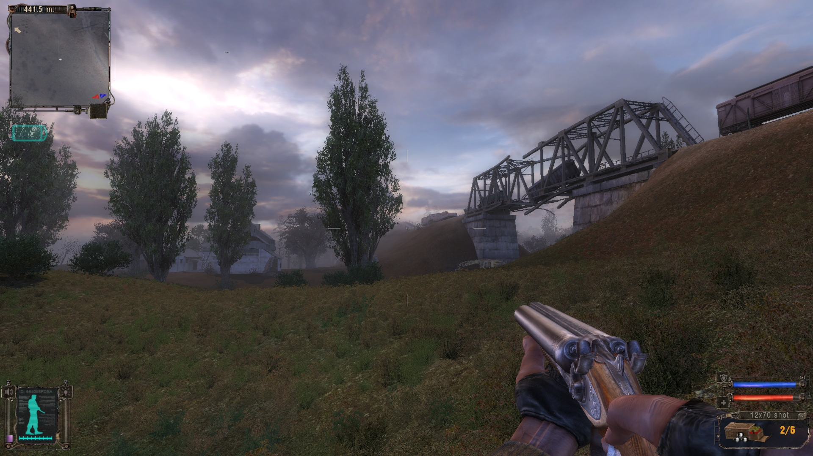
S.T.A.L.K.E.R.: Shadow of Chernobyl
Just Cause 2 (2010) was a groundbreaking sandbox open world game in that along with being graphically stunning for its time, it also allowed the player to partake in activities which were never really done before. Skydiving, a
grapple hook, and other crazy stunts. It wanted to make the player feel overpowered like the ultimate action movie hero. It gave players the tools to construct their own fun.
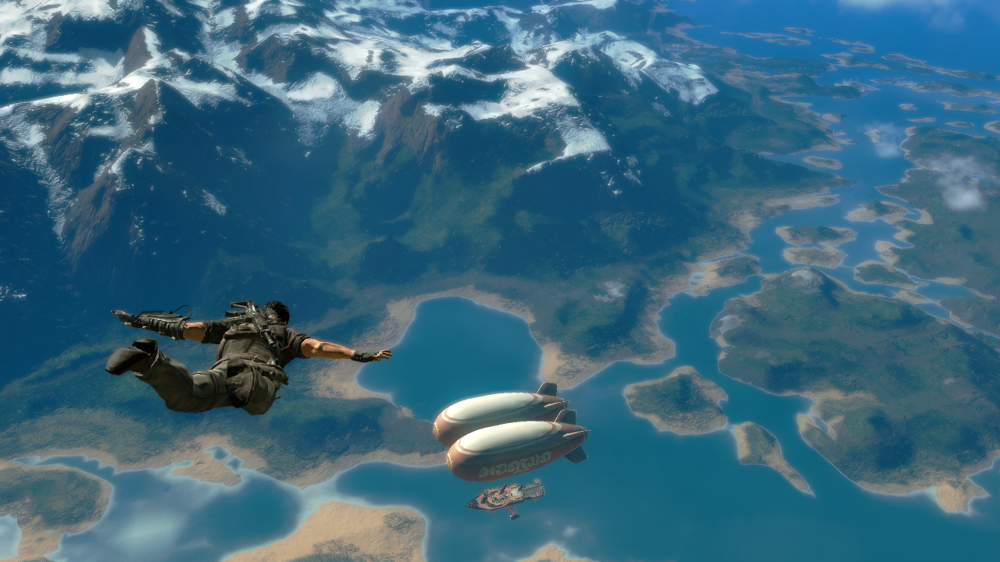
Sky diving in Just Cause 2, with the “Mile High Club” in view
Minecraft (2011) allowed players to deconstruct and reconstruct everything in the game. The game also used procedural generation so constantly create new areas of land so it was impossible for the player to reach the edge of the
map. The player could walk in one direction forever.
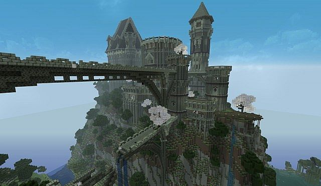
An ancient castle made by a player in Minecraft.
The Witcher 3: Wild Hunt (2015) won widespread critical acclaim for its convincing virtual world and story. Along with GTA 5, these two games have set a new bar for all other open world games to aspire to. Both games made great
strides in attention to detail. For example depending on what the player does while playing the game, the world and its inhabitants will react accordingly. For more information please see the Witcher 3 Walking The Walk video
linked in the bibliography.
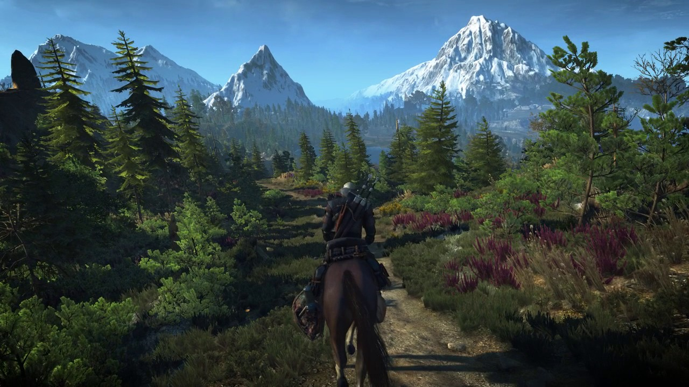
Exploring the world of The Witcher 3: Wild Hunt.
Horizon Zero Dawn (2017) took many elements from existing open world games and put its own twist on them. For example, some open world games require the player to climb a tower or mountain to reveal the game map in different areas.
Horizon Zero Dawn instead required the player to climb up a tallneck (a robotic dinosaur). Despite having a somewhat clichéd story arc, the game world itself was very original. Incredible graphics also added to the game’s appeal.
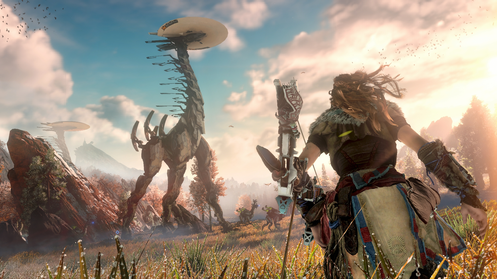
A tallneck in Horizon Zero Dawn.
Types of Open World Games
Open world games are split into different categories, with some being hybrids of these categories.
Sandbox
In a sandbox game, the player makes their own story. They are presented with what is usually a huge map filled with activities to do. Often these activities take the form of crazy or over the top stunts such as skydiving or conveniently
placed jumps for the player’s car. Sandbox games often have little to no story. However some sandbox games such as The Legend of Zelda: Breath of the Wild presents the player with many activities such as harvesting resources
for upgrades, creating an arsenal of weapons, and slowly gaining power through fighting smaller enemies in order to defeat the main enemy at the end. This game has a strong storyline to go with it, however there is not much
linearity to it. The player finds different characters and story elements as they explore the world. They can even fight the main enemy straight away if they wish, although they would probably not be strong enough to defeat
them.
Story Driven
Story driven open world games like to direct the player where to go next. A player receives a quest and they are shown a marker on their map that they travel to. They may get sidetracked and discover side quests along the way,
but they always have an idea of what they should be doing next. RPG games such as The Elder Scrolls series and The Witcher are usually quite story driven. They usually have some sandbox elements for the player to do to keep
themselves entertained between missions, or if they just want to do they own thing within the game world for a while without the worry of doing a story mission. Grand Theft Auto is probably the best example of a story driven
game with sandbox elements.
Survival
Survival games involve the player constantly feeling underpowered. They have to find resources such as food, water, and ammunition. They usually have to also deal with a certain enemy type such as a zombie apocalypse, other players,
or both. Players spend their time in game looking for resources and the only way to end the game is through death. The “multiplayer zombie survival game” genre has become a phenomena especially on PC in recent years. Every
other week there seems to be a new one released even today. Many of these games are low quality copies of more successful games, and it seems that the major studios have now stopped making them as the market has become too
saturated with them.
Battle Royale
Battle royale games are the new kid on the block when it comes to open world multiplayer games. These games are heavily influenced by the film Battle Royale and The Hunger Games series. Players are dropped in different locations
on a large map. They loot and find weapons, and kill each other. The map slowly shrinks in size as the game goes on until there is only a few feet and maybe a wall to hide behind between two players. The last surviving player
is the winner.
PlayerUnknown’s Battlegrounds is by far the success story in 2017 in all of video games. In September it broke Dota 2’s record for the most concurrent players playing one particular game at any given time on Steam. Brendan "PlayerUnknown"
Greene (an Irishman) has been creating Battle Royale mods for years, with his most successful being “King of the Kill” for H1Z1 - one of the more successful multiplayer zombie survival games mentioned above. His mod was incorporated
into the main game of H1Z1 as an alternative game mode to the zombie survival game. PlayerUnknown lost his creative freedom with the move, so he went and created his own studio and created Battlegrounds whilst also vastly improving
the original formula from his H1Z1 mod in terms of game mechanics.
Already several other major and indie studios have announced that they are releasing battle royale games of their own, with some having already rushed early versions out the door. Even Rockstar Games have added a battle royale
game mode to Grand Theft Auto Online! It seems that everyone wants to jump on the bandwagon to try and capture some of the battle royale pie - just like how the exact same thing happened with the zombie survival genre. Incidentally
it’s interesting to see how the battle royale genre itself originally came from a mod for a zombie survival game! And if that wasn’t enough, the multiplayer zombie survival game genre itself was originally a mod for the military
simulation game Arma.
The Impact of Open World Games
Open world games have had a massive impact on the gaming industry. Many players dream of a video game transporting them to another world where they can do what they like, when they like. Open world games are the closest thing players
have to such a fantasy. Some players won’t play anything other than open world games as their strive for that freedom within a game is so strong.
One aspect which has made huge strides in recent years has been the ability of a game to show the impact of the player’s actions on the game world. For example say if a player kills a huge dragon in the game and is walking around
the in-game town later, they will hear NPCs on the street calling the player’s character a hero for slaying the dragon and saving them. Or a player might silently kill an NPC only to be visited a few days later by a secret
stranger offering the player to join a secret assassins guild. These little additions give the player the feeling that their actions are having a real effect on the game world. It gives them a sense of importance.
A recent survey has shown that younger players tend to focus more on completing the campaign of an open world game, whilst older players focus more on exploring the open world. This is interesting as it matches up well with my
own history of playing them. My own take on this is that when I was young I liked to play the game’s story within the open world and know I had the freedom to explore anytime I liked. However now that I am older and have more
experience with playing open world games, I like to explore to see what the game has to offer, how it compares with other open world games technically, mechanically, and how immersed it makes me feel. I’m constantly looking
for the “next generation” of open world game, and many other experienced gamers are too.
There are two games that stand out more than any others in terms of the impact they have had on gamers. World of Warcraft took the world by storm when tens of millions of players from all over the world could dedicate much of their
lives to the game, with their in-game character being just as important to them as their real-life selves. People lost their jobs over the game. It took over some people’s lives. It became their life. Blizzard's ability to
make the game run on a minimum specification PC or “potato PC” meant that more players could play the game. The more players playing the game meant a richer game world and people to meet. This snowball effect helped the game
to grow immensely.
The second game with such an impact has been the Grand Theft Auto series, which seems to keep outdoing itself with its impact on popular culture. It’s strange that the game has had this impact on popular culture when the entire
game is a parody of popular culture in the first place! I think the controversial aspect of the game which has been heavily exaggerated by the mainstream media has done nothing but help the game. The game is marketed as an
over 18’s game and yet the mainstream media only seem to say negative things about it. GTA 5 had the last laugh however when it broke six Guinness World Records upon its release in 2013, including the highest revenue generated
by an entertainment product in 24 hours, and the fastest entertainment property to gross $1 billion. The inclusion of a fully featured and extremely immersive multiplayer MMO with GTA 5 has achieved the same thing that World
of Warcraft achieved when it released in 2004 - bring millions of players together in a rich, immersive, virtual world. The inclusion of microtransactions also keep the revenue stream coming in.
The Future
The question is often asked: “What is the Holy Grail of open world games?” I am of the belief that the answer to that question involves several factors.
Graphics. Although I do not believe that the perfect open world game needs photo-realistic graphics, having an appropriate style that doesn’t get tiresome to look at is very important. World of Warcraft is probably the closest
game we have to the Holy Grail to date, and it has very stylized graphics. A developer choosing to stylize a game’s graphics rather than going for a super realistic look also means that the game can run on a lower specification
PC - which means a potentially higher player base. This is extremely important for multiplayer games as it greatly increases server population.
Multiplayer. It is the general consensus that the Holy Grail of open world games will be a multiplayer game. It allows players to socialize with other players and make new friends. It fulfills the basic human need to interact
with other people. Even people who are suffer with extreme social anxiety in real life are able to play multiplayer games quite easily and they really enjoy doing so.
Map size. Many players think that a huge map makes a great open world game. However having a big map with nothing in it becomes boring very quickly. A smaller, more detailed map is often much better. Grand Theft Auto 5 has
the most detailed map I’ve ever seen in a game, and yet is only 49 sq. miles. Players often regard the Holy Grail of open world games as having a map the size of a whole planet, or even a whole galaxy or universe. It would
be impossible for developers to handcraft such a map due as it would take up way too much development time. With this in mind, the best way to achieve this map size is through procedural generation. However this technology
does not create detailed, interesting maps. A perfect example of this is No Man’s Sky (2016), which many players considered to be the Holy Grail before it’s release. Upon release however it massively failed to live upto
expectations, with many players including myself having preordered the game and wasting money as a result of it. The game will go down in history as the most disappointing game of all time. See the links in the bibliography
for more information - I personally recommend watching the 30 second video “No Man's Sky E3 2014 vs. Release” if you don’t fancy watching the other longer videos! That 30 second video sums it all up.
Virtual reality. This next generation of technology mixed with the open world genre has already started. The Elder Scrolls V: Skyrim and Fallout 4 will be releasing soon in VR. When multiplayer open world games become available
in VR and the technology is considerably cheaper to purchase then players will really take an interest. For now however they are happy enough to wait.
A final question that needs to be asked is “When does a game become too real?” There have been examples of this in the past where a game has some annoying mechanics or systems in an attempt to add realism, but they only end up
annoying the player and getting in the way of their enjoyment of an otherwise great game. An example of this is Shenmue and how the player has to abide by the in-game clock and return home on time every night to beat the game.
Developers have to balance realism with fun.
Conclusion
So that concludes a brief introduction, history, analysis, and future projections for open world games. It’s a long history and I’m sure the best games are yet to come. I hope you enjoyed reading, and I encourage you to try some
open world games yourself if you’re not already playing them!